高水三山
| 日付 | 2007年4月1日（日） |
|---|---|
| 山域 | 奥多摩 |
| メンバー | グループ（男3女2） |
| 山行形態 | 日帰り |
| アクセス | 電車 |
| ルート (Map) | 軍畑駅→高水山→岩茸石山→惣岳山→御嶽駅 |
週間天気予報が外れて本日は晴れ。
5名で奥多摩入門の山・高水三山へ行く。
9:59 軍畑駅到着。標高245m。
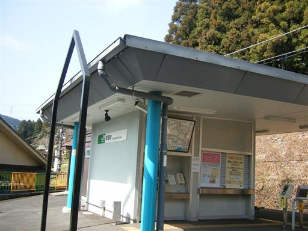
奥多摩ののどかな風景の中を歩いていく。
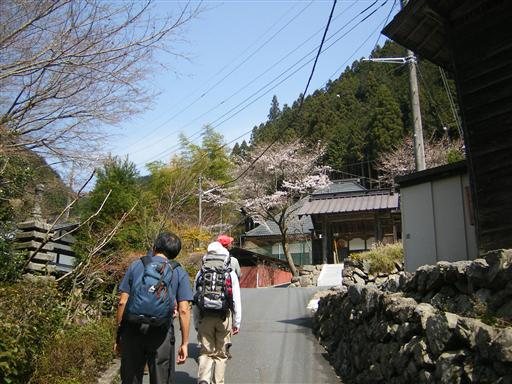
車道をしばらく歩いた後、登山道入口に到着。
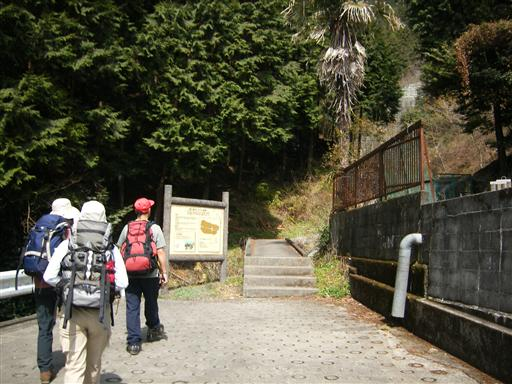
木段の間から花が咲いている。そろそろ花が咲く季節になってきた。
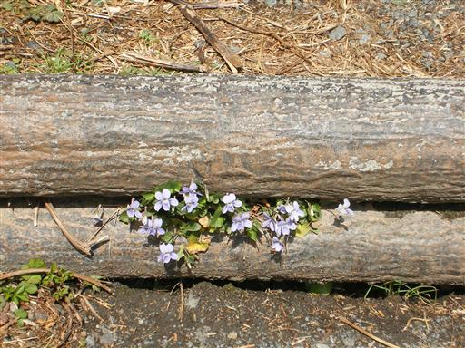
高水山山頂直下の広場。

かの有名なカタクリの花…らしい。
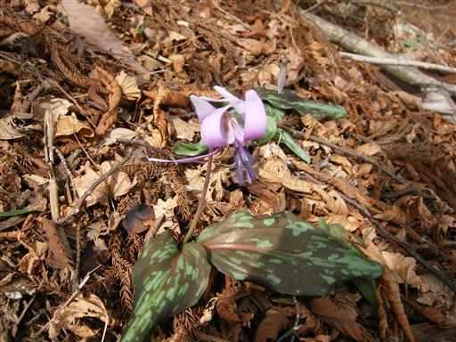
11:43 高水山山頂到着。標高759m。
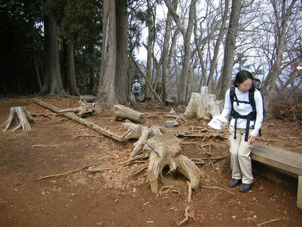
山頂からの眺め。秩父の山並が見える。
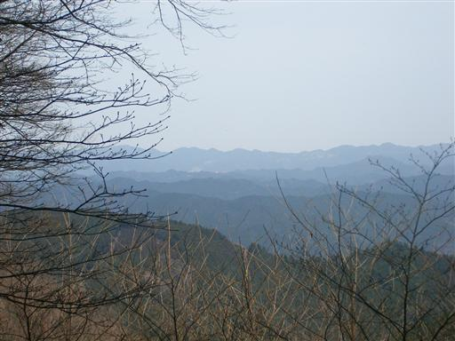
12:14 お隣の岩茸石山山頂到着。標高793m。本日の最高峰。
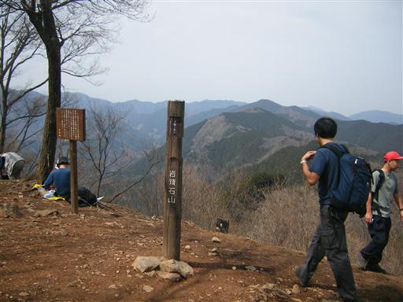
山頂からは川苔山が大きく見える。
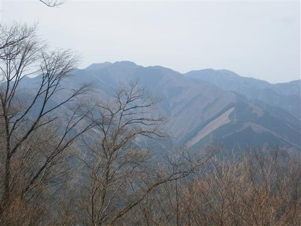
いったん下った後、小さな岩場を登っていく。
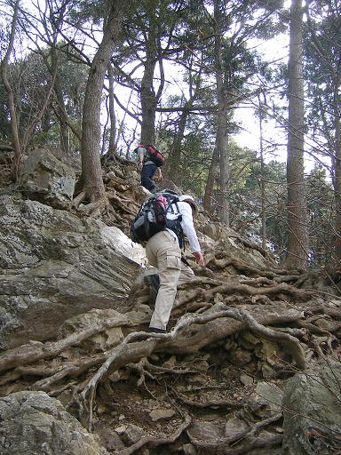
13:05 惣岳山山頂到着。標高756m。
山頂には小さな社が建っている。
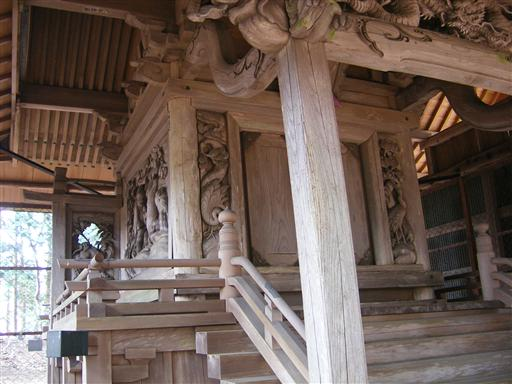

14:09 御嶽駅到着。標高245m。
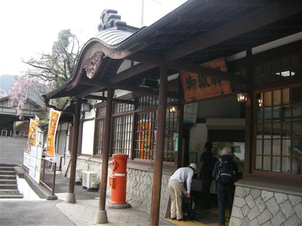
駅のホームからは、しだれ桜が見える。
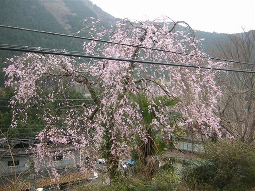
帰りは三河屋で温泉に入る。
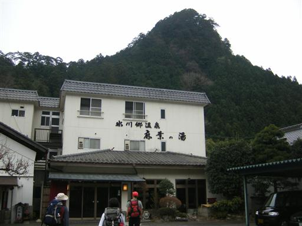